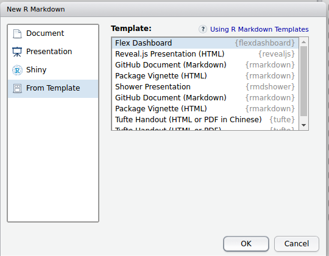
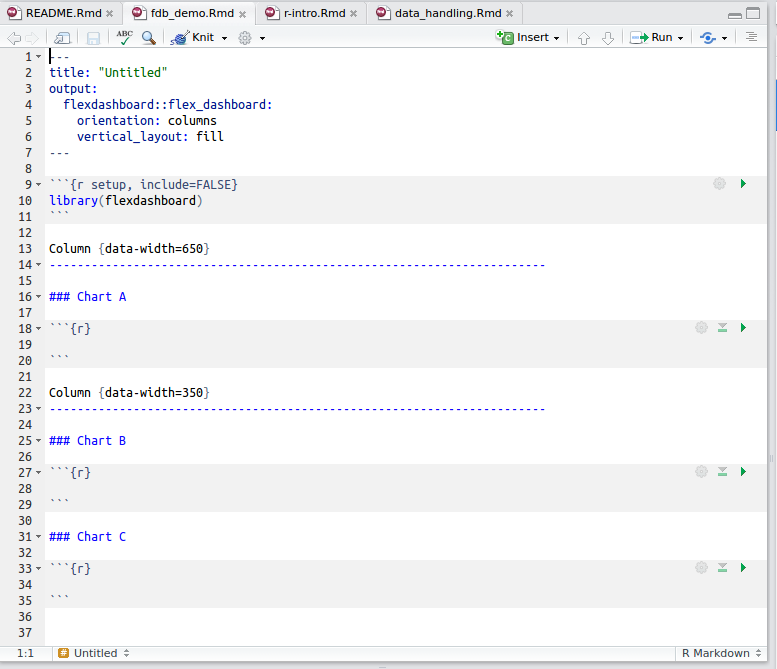
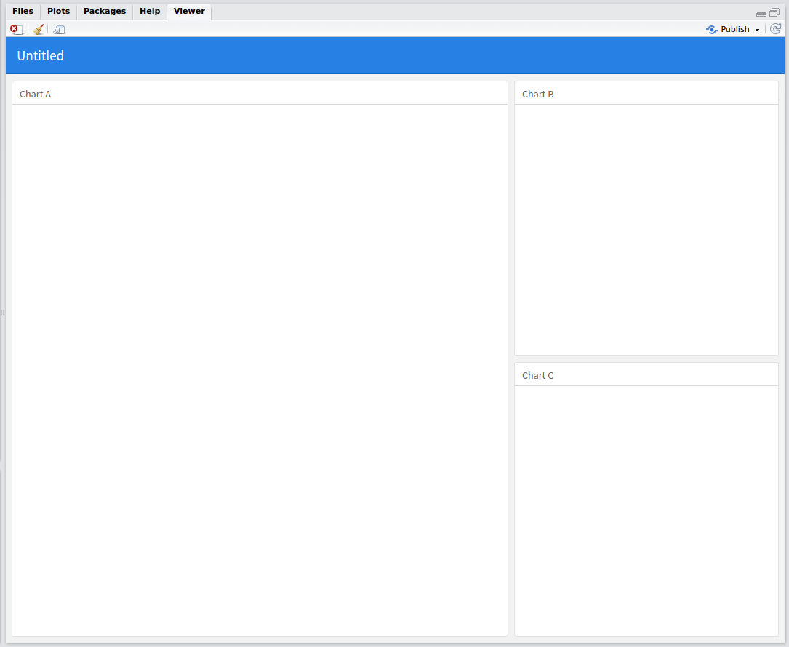
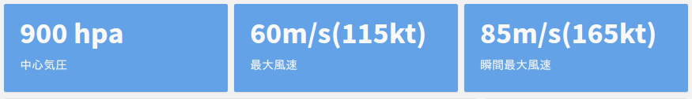

R Markdownでダッシュボード作成
2017/03/07
このドキュメントはR Markdownの初心者を想定しています。なので基本的な内容を中心に構成しています。なおRのコードは必要最低限しか出てきません。なおこれは過去にスライド形式で発表したRmdファイルをほぼそのままドキュメントとして出力しています。そのためほぼ箇条書きで書いています。
ダッシュボードとは?
- 色々な情報をぱっと見で理解できるように集約したもの
- 車の運転席のダッシュボードをイメージしてもらえれば
- グラフや表，文字などをわかりやすく配置
- データを集約して表示するのに便利
- あるトピックについて，様々な角度から可視化
- 相手に情報を伝えやすい!
flexdashboardパッケージ
- R Markdownの拡張パッケージ
- Rmdファイル単体でダッシュボードを作成可能
- レイアウトが簡単
- row(行)とcolumn(列)によるレイアウトシステム
- モバイル対応(フレキシブルデザイン)
- レイアウト設定以外は通常のRmd
- 動的なコンテンツ(htmlwidgets系)も作成可能
- shinyもOK
使ってみよう
flexdashboardのインストール
- CRANから
install.packages("flexdashboard")- GitHub版から
devtools::install_github("rstudio/flexdashboard")- githubinstallから
githubinstall::githubinstall("flexdashboard")テンプレートからRmdファイル生成
- R Markdownを新規作成
- “From Template”を選択
- “Flex Dashboard”を選択
- OKをクリック

こんなRmdができます:

そのままknitするとこうなります:

冒頭のyamlについて
title: "Untitled"
output:
flexdashboard::flex_dashboard:
orientation: columns
vertical_layout: fill- title: ページのタイトル(navbarにあるやつ)
- orientation: 列方向(columns)で区切るか行方向(rows)で区切るか
- 見出し要素Lv2の方向を決定します
- vertical_layout: グラフを範囲内に収める(“fill”)かスクロール(“scroll”)するか
- social: 要するに“共有”ボタンをつけるかどうか
他にもありますが，?flexdashboard::flex_dashboardでヘルプを参照してください
レイアウトと見出しレベルについて
見出しレベル1: ページ区切り
- 見出しレベル1(h1)があると，ページ区切りとして機能
公式やサンプルでは
====を使った方法で解説ページタイトル ====でもいつもの
#でもOK# ページタイトル
- この文字は表示されません
- 識別用に利用されます
見出しレベル2: 親ブロックの区切り
- 見出しレベル2(h2)があると，その数だけページ内を区切ります
公式やサンプルでは
----を使った方法で解説ブロック ----でもいつもの
##でもOK## ブロック
- この文字は表示されません
- 識別用に利用されます
見出しレベル3: 親ブロック内の子ブロック
- 見出しレベル3(h3)があると，その親ブロック内で子ブロックを作成します
いつも通り
###で作ります### ちゃーと- この中にRチャンクを挿入して中身を作成
- 親ブロック内に子ブロックが複数あると親と逆の方向で区切ります
- この文字は表示されます
タブセットの利用
- 親ブロック(見出しレベル2)内でタブを設定可能
- 子ブロック要素が各タブの内容となります
## 親ブロック {.tabset} ### 子ブロック1 (ここにRチャンクなど) ### 子ブロック2 (ここにRチャンクなど)
その他のレイアウト関連
- 他にも色んなパターンができます
- 区切り幅(高さ)の調整
- サイドバーを表示
- ストーリボード
- 詳しくは，以下の本家のサイトを参照してください
Components
- ValueBoxes: 単一の値をシンプルに示したい時に 
- gauge: ゲージをさっくりと作ることも可能

- 詳細およびその他の要素は本家のサイトを参照
活用例
過去に私が作ったダッシュボードの例を参考までに。

活用例: 個人別ダッシュボード
- 「あるデータセットから，個人別のダッシュボードをまとめて作りたい」
- R Markdownのパラメータ機能をうまく利用すれば可能
- 詳細は以下を参照
R Markdownのparams機能を利用してflexdashboard作成

参考資料
- flexdashboard: Easy interactive dashboards for R
- 本家のWebサイト
- たぶんまともな情報はここくらいにしかない
- あとはソースコードとヘルプを読むくらいしか…
- flexdashboard Examples
- サンプルがギャラリーになってます
- ソースコードも(いくつかは)確認できます
- 各ギャラリーをクリックして表示
- 画面右上の“</>Source Code”をクリック
- Pokemonすげぇ
Enjoy!